Receiving (PO Controlled)
- Open PO validation
- Over-receiving prevention
- Partial receipts management
- Smart auto-fill and full history
A modern, robust and scalable WMS designed for real warehouse operations.
Reduce errors, control your inventory and gain full traceability over every movement.
ICS is a Warehouse Management System designed for real operations, with intelligent flows, strict validations and complete traceability.
From receiving to storage, internal transfers, consumption and picking, ICS guides the operator step by step to reduce errors and increase productivity.
Every movement is recorded with user, date, time, quantities and operation type, providing full traceability for audits and customer requirements.
Tables that feel like Excel, draggable modals and clear error messages make training faster and adoption easier.
ICS covers the complete warehouse lifecycle, from receiving POs to consumption and history analysis.
Explore the internal tables, validations and logic behind each module.
ICS is not just software; it is a way to operate your warehouse with discipline and clarity.
Validations at each step prevent over-receiving, wrong locations and incorrect quantities.
Each movement updates on-hand and history in a consistent, auditable way.
Smart auto-fill, guided flows and Excel-like tables speed up daily operations.
Clear screens and messages reduce the learning curve for new operators.
The new dual‑layer Incoming Load Processing module enforces file structure, validates Part Numbers, prevents duplicate shipments and blocks incorrect data before it reaches operational workflows.
Flexible monthly licensing that adapts to the size and needs of your operation.
10 user licenses: $1,500 – $3,500 USD / month
Share a bit about your operation and we will explore how ICS can help you.
We design inventory and warehouse solutions with real-world logic and a modern user experience.
Email: sanchezwebappsllc@yahoo.com
Location: Los Angeles area, California, USA
ICS includes professional tables, draggable modals and web reports ready for real operations.

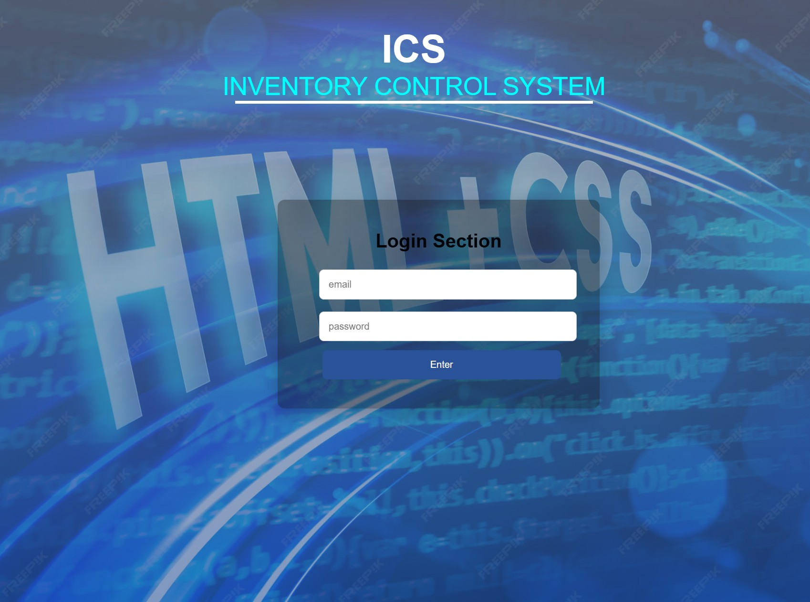
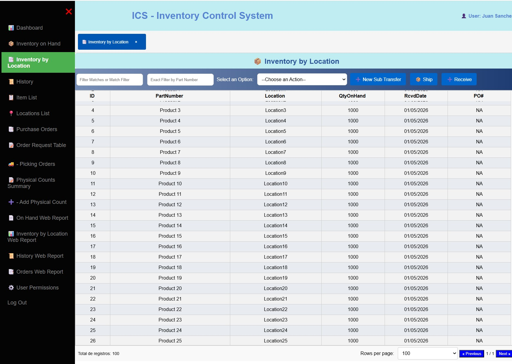
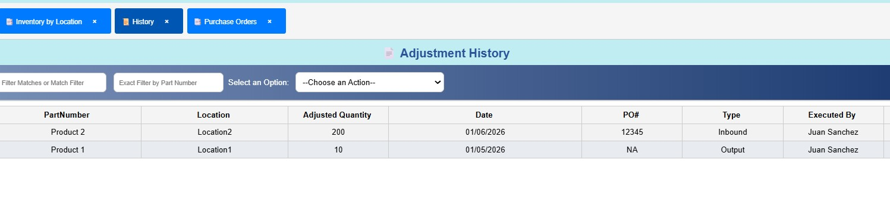
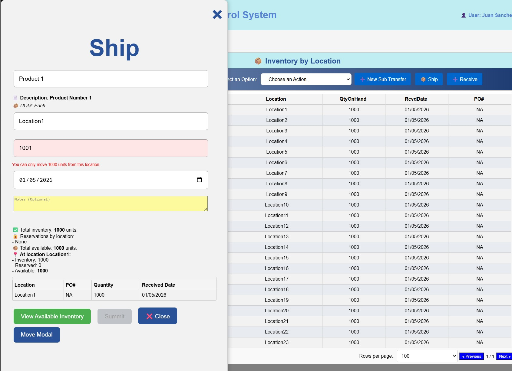
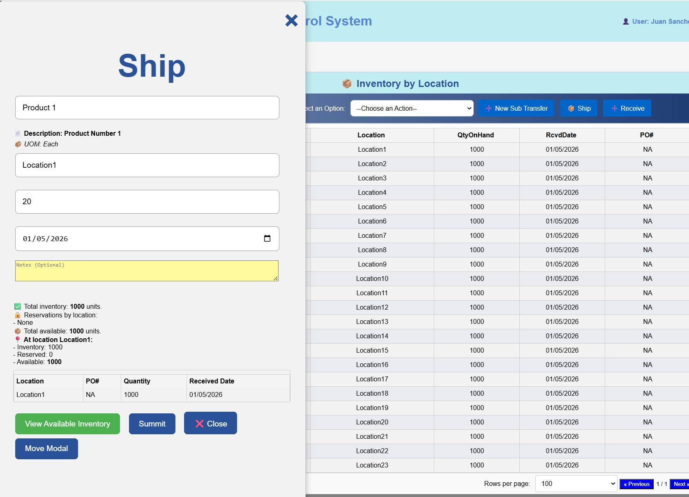
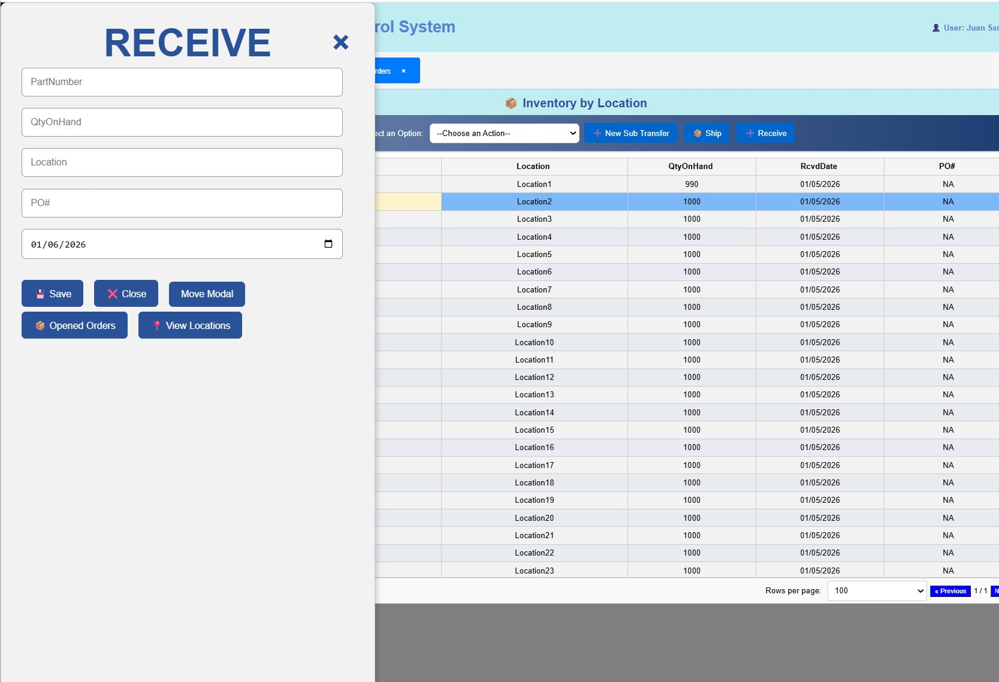
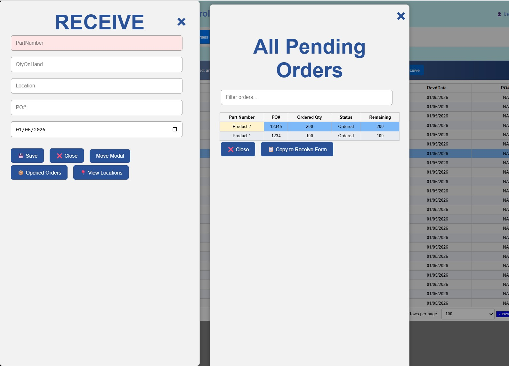
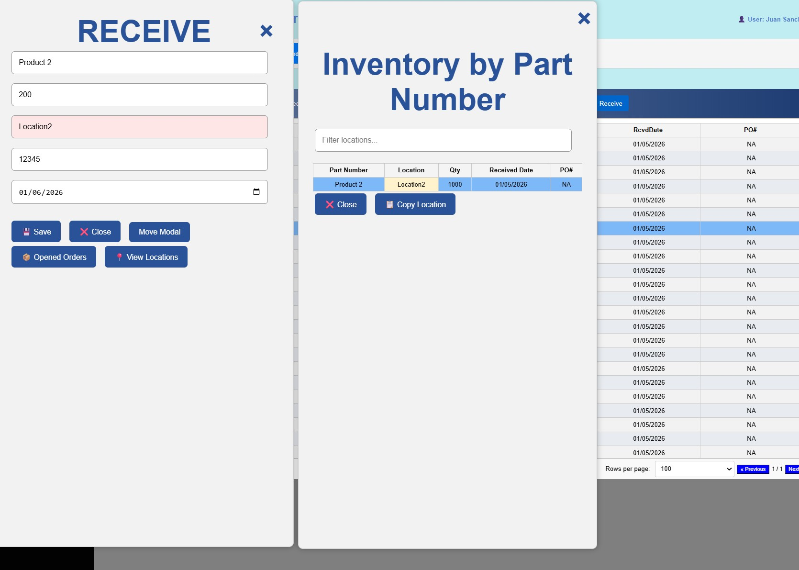
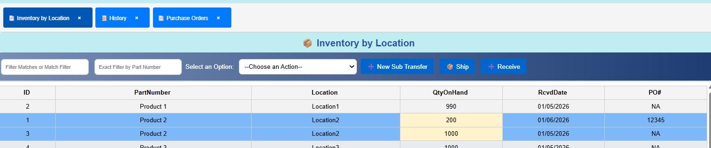
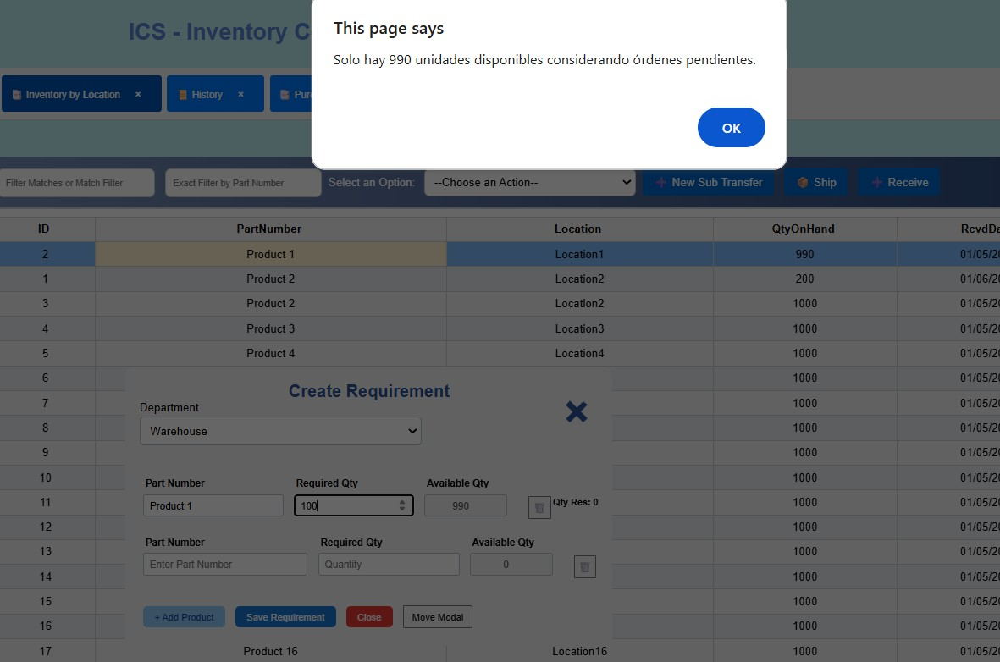
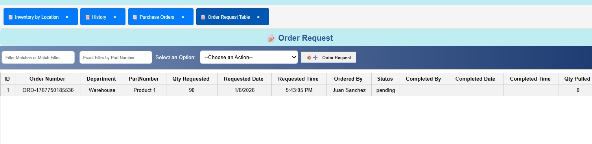
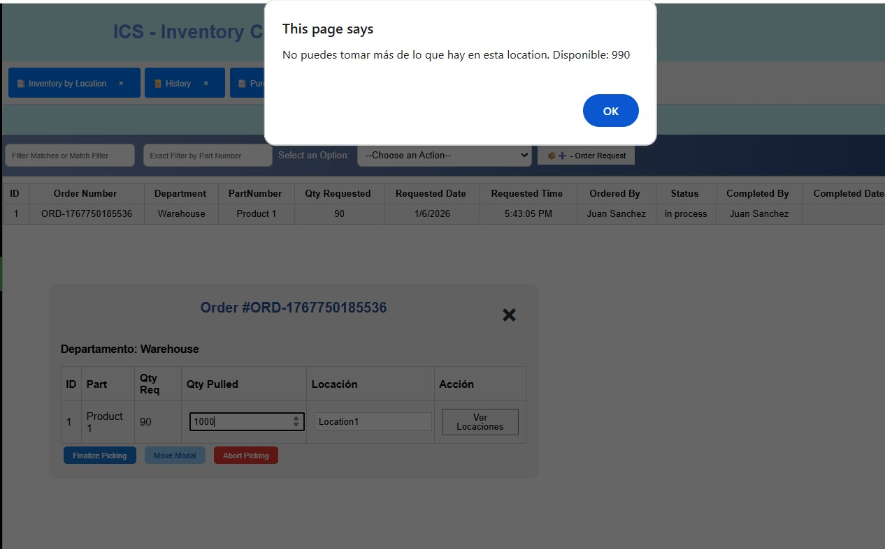
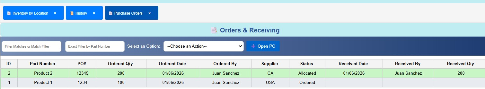